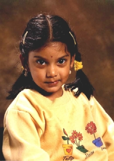

Hi,
I am Manasa (named after the Goddess of Snakes).
I was born in Melbourne, Australia
10th Nov. 1995
I like
Making up songs
Being with lots of friends
Giving flowers to my teacher
Doing jig saw puzzles on computer
This is my going away present
to my friends "Aravind" and "Aarathi"
from Edmonoton in Canada.
I like Anzac day Do you...?
The funnest day, I know it is sad
But you should celebrate that
I know it is a bit funny that people die
And go up to heaven but that's how its like
God can do that it at any time he likes
I know it is pretty dangerous and I know they
like some people like mothers fathers
and dads and moms and girls.
I know they can get very poor. Their mom
goes to war instead of dad. Every one gets
sad, sad. Why don't you know they get sad.
That is why we can celebrate Anzac Day
for the people who die.
The one two march.
One two one two march little soldiers
One two one two one two march little soldiers
We like Anzac day, We like Anzac day
One two one two march
We say hai hai, we say good bye, we march
One two One two look straight, at the captain
One two one two go, Anzac day is fun to march
One two one two two
Once a soldier went up to me and said
I don't want to march
If you don't march you wont get your wish
said the Sire
Hai Hai I do it,.. do it, said the soldier
you march One two, One two
When we see some Thomas Tank Engine
We love him because he is little.
He is the bestest train we know.
He goes "chuk chuk chuk"
And the tunnels end he go slows on
Joseph some how. He says oopsy when he
misses his carriages
Henry the truck never mind
He goes bumpidy bum bumpidy bum.
So Thomas is a special train.
I know he is a bit little, little.
But he is sort of clever. He likes being cheeky
He likes being friendly,
He likes being helping and also different.
Edward and Thomas does have difference
and they help each other.
Edward is the incorporative
Thomas is everything but ! and
Gordon is not every thing he is just dumb ..
He is boring,
he doesn't do anything and is lazy.
His bones are broken but what shall we do.
It is silly that a trains has bones but
I am not that meaning of bones.
It does not have enough gas and
enough petrol to go.
That's what I mean of enough of coal
to put it in the fire.
So he goes "chook" "chook boom peep..".
He does not do that all the time.
He just lies down going lazy pope
What shall we do ?
We don't know Gordon so we better
say Gordon oooohhaaa!!